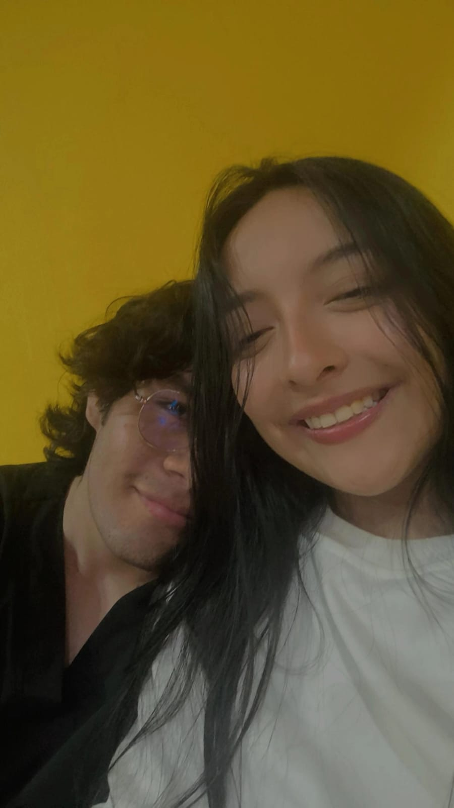

Tu vocación
Escuchar, acompañar y ayudar a que cada voz encuentre su manera de expresarse.
Un momento para recordar
Hoy no solo recibiste una bata: recibiste el símbolo de todo lo que has construido con tu vocación, tu sensibilidad y tu esfuerzo.

Para la futura fonoaudióloga
Escuchar, acompañar y ayudar a que cada voz encuentre su manera de expresarse.
Una bata recibida en comunidad, como reconocimiento a la profesional que estás empezando a ser.
Muchos aprendizajes, historias y personas que tendrán la suerte de encontrarte en su camino.
Una celebración pendiente
Quiero escuchar cómo viviste este día, brindar por ti y darte un abrazo que esté a la altura de este logro.